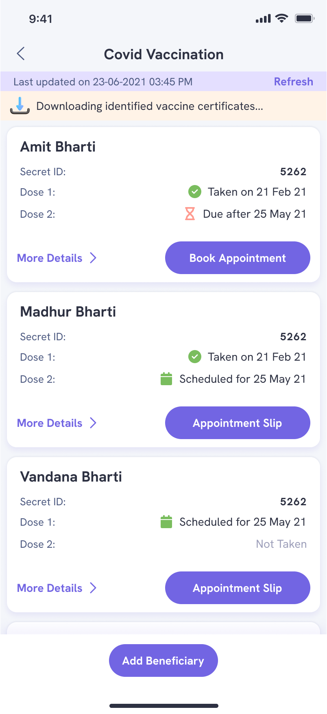
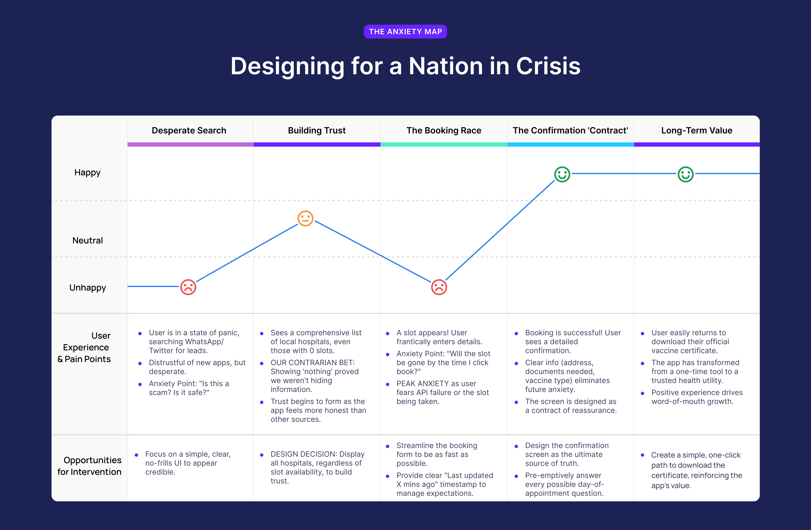

I led the design for a platform that navigated extreme public anxiety and technical chaos to facilitate over 2 crore vaccine certificate downloads.
+2 CroreVaccine Certificates
#1on Google Search
LeadProduct Designer
~2 MonthsInitial Launch

1. The Setup: A High-Stakes Mandate
In 2021, India faced a monumental challenge: vaccinating its population amidst a devastating pandemic wave. The government released the Co-WIN APIs, creating a sudden, urgent opportunity. The business goal for Eka.Care was clear: leverage these APIs to build a superior, trustworthy public utility that could capture a massive, anxious user base and establish us as a key player in India's digital health ecosystem.
The User's Reality: A State of Panic
The public sentiment was not one of simple "user needs"; it was a state of crisis. My rapid research into online forums, social media, and news reports revealed the core user anxieties:
Availability Anxiety
"Will I ever find a slot for my elderly parents? I've been trying for days."
Trust & Legitimacy
"Is this third-party app even legitimate? How do I know it's safe to give them my Aadhar number?"
Information Gaps
"How do I know this information is real and not a waste of my time? Is the slot even still there?"
My Role: Designer as a De-risking Agent
As the sole designer on this initiative, I was tasked with creating a functional UX under an extreme "one-day delivery mode" timeline. With no PM, my role expanded significantly. I was responsible for de-risking the project by defining requirements, analyzing technical constraints, and creating a clear plan of action that the entire cross-functional team could rally behind.
2. Discovery: Finding Signal in the Noise
The existing official portal was functional but overwhelmed, creating a significant "trust gap." Users were desperate for an alternative that was not just faster, but clearer and more reliable. My discovery process started with the technology itself to understand our exact capabilities.
Deconstructing the Technical Foundation
My first step was a deep dive into the technical foundation—the Co-WIN APIs. Instead of just reading the docs, I deconstructed them into a clear, grouped list to understand our building blocks. This helped the entire team, including non-technical stakeholders, grasp what was possible.
Metadata APIs
GET/v2/admin/location/statesGet states
GET/v2/admin/location/districts/{state_id}Get list of districts
Appointment Availability APIs
GET/v2/appointment/sessions/public/findByPinGet vaccination sessions by PIN
GET/v2/appointment/sessions/public/findByDistrictGet vaccination sessions by district
GET/v2/appointment/centers/public/findByLatLongGet vaccination centers by latitude and longitude. [Draft]
GET/v2/appointment/sessions/public/calendarByPinGet vaccination sessions by PIN for 7 days
GET/v2/appointment/sessions/public/calendarByDistrictGet vaccination sessions by district for 7 days
GET/v2/appointment/sessions/public/calendarByCenterGet vaccination sessions by center for 7 days. [Draft]
Certificate APIs
GET/v2/registration/certificate/public/downloadDownload vaccination certificate in PDF format by beneficiary reference id
The "Search Near Me" Insight
Key Insight: While the APIs provided basic search by PIN and District, I identified a critical gap: there was no single API for a simple, location-aware "search near me." Competitors were just replicating the basic government portal forms, forcing users to manually find and enter their PIN or district.
My Strategic Solution: I proposed a new user flow. By first requesting the user's device location (with their permission), we could programmatically determine their current Pincode. We could then feed this data into the existing .../findByPin API. This seemingly small step created a "one-tap" search experience that was vastly superior and less stressful for a user in a panic. It became our single biggest UX differentiator.
Mapping the Anxiety Journey
This technical understanding, combined with the "Search Near Me" insight, allowed me to frame the user's emotional state. I synthesized this into a journey map that became our team's guiding star, ensuring we focused on reducing anxiety at every step.

Fig.1 - I mapped the user's emotional journey to align the team on our primary goal: reducing anxiety. (Click to zoom)
3. The Three Pillars of Trust
Based on the journey map and user anxieties, I established three core design principles that became our unwavering guide for every feature and decision.
1
Radical Transparency
Show everything, hide nothing. To build trust, we had to be more comprehensive and forthcoming than the official sources, even if it meant showing "bad news" (like no available slots).
2
Honest Expectation Management
Never overpromise. Be explicit about data freshness and potential failures to prevent the user frustration that comes from chasing non-existent "ghost" slots.
3
Anxiety-Proof Confirmation
The end of the flow must be a definitive, reassuring "contract" that contains every piece of necessary information, leaving absolutely no room for doubt or last-minute questions.
4. Design & Execution
I used these pillars to design the two most critical user flows: booking a slot and downloading a certificate. The goal was to demonstrate deliberate, principle-led thinking, not just present final screens.
graph TD
A(Start) --> B[Select 'Co-WIN Services'];
B --> C{Choose Task};
subgraph "Download Certificate Flow"
C --> C1[Download Certificate];
C1 --> D[Authenticate via OTP];
D --> E[Select Beneficiary];
E --> F[Download Successful];
F --> G[View Rich Success Page Incl. Cross-Sell & Next Steps];
end
subgraph "Book Slot Flow"
C --> C2[Book Slot];
C2 --> H[Authenticate via OTP];
H --> I{Search Method};
I --> I1[By Pin Code];
I --> I2[By District];
I1 --> J[View Results];
I2 --> J;
J --> K[Select Center & Slot];
K --> L[Confirm Booking];
L --> M[Booking Success Page];
end
subgraph "Link Passport Flow"
C --> C3[Link Passport];
C3 --> N[Authenticate via OTP];
N --> O[Select Beneficiary];
O --> P[Enter Passport Details];
P --> Q[Submit & Confirm];
Q --> R[Linking Success Page];
end
classDef core fill:#eef2f7,stroke:#3d5a80,stroke-width:2px,color:#3d405b,font-weight:bold;
class A,B,C,D,E,F,G,H,I,J,K,L,M,N,O,P,Q,R core;
Fig. 2 - The complete Co-WIN services user flow, mapping all critical paths from a single entry point. (Click to zoom & pan)
4.1 Flow 1: Booking a Vaccination Slot
The booking flow was designed to move from broad choices to specific actions, giving the user a sense of control and progress even in a chaotic environment.
graph TD
A[Start] --> B(Login with Mobile Number);
B --> C(Enter & Verify OTP);
C --> D[View Beneficiary Dashboard];
D --> E(Select Beneficiary for Vaccination);
E --> F{Search for Center};
F --> G["Search by PIN Code"];
F --> H["Search by District"];
subgraph "Filtering & Results"
G --> I(Enter PIN & Search);
H --> J(Select State & District & Search);
I --> K[Filter Results];
J --> K;
K --> L(Age: 18+ / 45+);
K --> M(Cost: Free / Paid);
K --> N(Vaccine: Covishield / Covaxin);
L & M & N --> O[View List of Vaccination Centers];
O --> P{"Center Availability"};
P -- "Slots Available" --> Q[Select Date & Time Slot];
P -- "No Slots Available" --> R[Center Shown as 'Booked' or 'N/A'];
R --> F;
end
subgraph "Confirmation"
Q --> S(Review Appointment Details Center, Date, Time, Vaccine);
S --> T(Confirm Booking);
T --> U(Booking Successful!);
U --> V[View/Download Appointment Slip];
end
classDef default fill:#eef2f7,stroke:#3d405b,stroke-width:2px,color:#3d405b;
Fig. 3 - The booking flow, designed for clarity and user control from start to finish.
Reducing Initial Friction
Approach: A single, simple search bar for location.
Problem: Users think about location differently (PIN vs. District). A single bar created ambiguity and was too restrictive, forcing users into a single mode of thinking.
Decision: We implemented explicit toggles for "Search by Pincode" and "Search by District." This empowered users to search in the way that felt most natural to them, directly reducing initial friction and perceived complexity.
Applying Radical Transparency
Approach: Only show centers with available vaccine slots to simplify the view.
Problem: This created intense anxiety. Users would ask, "Is my local hospital not a center, or is the app just not showing it?" It broke their trust in our system's comprehensiveness.
Decision: We showed all centers, but clearly marked those with "No Slots Available." This was our "Radical Transparency" pillar in action. It proved our system was working and complete, which paradoxically built more trust than hiding negative information.
Pre-empting User Doubt
Approach: A minimal card with just the hospital name and time for a clean UI.
Problem: This left too many critical questions unanswered (Cost? Vaccine type? Age group?), forcing users to click through and potentially waste time on an incompatible slot.
Decision: We chose to over-communicate. The final card showed Vaccine Type, Cost, Age Group, and Slot Count upfront. Every piece of data we added was one less reason for a user to feel anxious or uncertain.
4.2 Flow 2: Downloading the Certificate
This flow was not just a utility; it was our single biggest opportunity for user acquisition and retention. We had to make it foolproof and use the moment of success to build a lasting relationship.
graph TD
A[Start] --> B(Login with Mobile Number);
B --> C(Enter & Verify OTP);
C --> D[View Beneficiary Dashboard];
D --> E{"Select Beneficiary's Certificate"};
E -- "Dose 1 / Dose 2 Certificate" --> F(Click 'Download Certificate');
E -- "International Travel Certificate" --> G(Click 'Intl. Certificate');
subgraph "Download & Engagement"
F --> H[Certificate Downloaded to Device];
G --> H;
H --> I(Confirmation Screen);
I --> J[Engagement Opportunity];
J --> J1("Store in Eka.Care Health Vault");
J --> J2("Link to ABHA Account");
J --> J3("Book a Health Check-up");
end
classDef default fill:#eef2f7,stroke:#3d5a80,stroke-width:2px,color:#3d405b;
Fig. 4 - The certificate download flow, designed to be a clear, task-based funnel that culminates in an engagement opportunity.
Designing a Clear Task-Based Architecture
Approach: A simple "Download Certificate" button on the homepage.
Problem: Users who needed to book a first dose or link their passport had no clear path. It served only one user segment, ignoring others.
Decision: I designed a dedicated "COVID-19" section with clear, task-based options: "Book Vaccination Slot," "Download Certificate," "Link Passport." This architecture made it immediately obvious where any user should go, regardless of their specific need.
From Transaction to Engagement
Approach: A simple "Download Successful" message with a link to the file.
Problem: This was a dead end. We were wasting a high-intent moment where the user felt successful and trusted us completely.
Decision: I designed a rich success page that not only confirms the download but offers clear next steps: "Store in Eka.Care Vault," "Book Your Next Dose," "Connect with a Doctor." This transformed a transactional endpoint into a powerful cross-sell and engagement opportunity, using the trust we'd just earned to introduce users to our wider ecosystem.
5. Impact: Dominating the Market Through Trust
Our principle-led approach was a monumental success. By focusing relentlessly on user anxiety, we built one of the most trusted and widely-used vaccination tools in the country, becoming a primary national resource and Eka.Care's single biggest growth engine.
App Store Rank
#1
in Health & Fitness
Peak Throughput
1.4L+
Certificates / Day
Organic Installs
~8K
Daily at peak
Total Downloads
2 Cr+
Vaccine Certificates
Fig. 2 - The feature's focus on a clear, anxiety-reducing flow drove massive organic growth and platform adoption.
Key Learnings & Reflections
In a Crisis, Clarity is the Most Valuable Feature. This project was a powerful lesson in context-driven design. The "best" design isn't always the cleanest or most minimal; in this case, it was the most explicit, reassuring, and information-dense.
Lead with Artifacts, Not Opinions. In a high-speed, low-spec environment, well-designed artifacts (journey maps, user flows, annotated wireframes) are the fastest way to create alignment and de-risk development. They become the plan when there's no time to write one.
Design the System, Not Just the Screen. Our biggest wins came from thinking about the entire user journey—from managing expectations *before* the search to providing value *after* the download. This systemic approach is what created sustainable trust and growth.